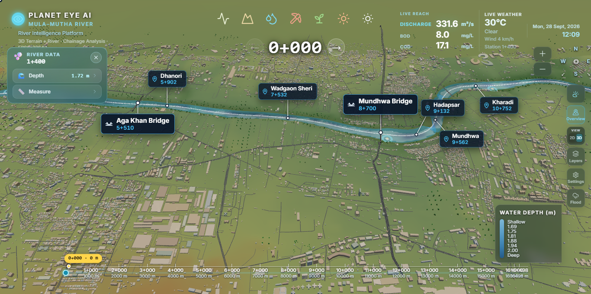
RiverEye 3D is a digital twin of the Mula–Mutha river. It rebuilds the river, its banks, bridges, roads, buildings, trees and terrain as a realistic 3D scene that you can fly through in a web browser.
On top of this 3D scene the model shows river information: how much water is flowing, how deep it is, what rock and soil lie along the banks, how clean the water is, where garbage collects, how the land around the river is used, how the monsoon floods the corridor, and what the air quality is along the river right now.
Everything is linked to one idea: the chainage — the distance in metres along the river. Pick a chainage, and every panel shows the information for that exact spot on the river.
The model covers the Mula–Mutha river from the upstream side near the Sangam (the meeting point of the Mula and Mutha rivers) to Manjari downstream. Water flows from west to east.
| Landmark | Chainage | Landmark | Chainage |
|---|---|---|---|
| Sangam | 0+622 | Hadapsar | 9+132 |
| Bund Garden | 3+452 | Mundhwa | 9+562 |
| Dhanori | 5+902 | Kharadi | 10+752 |
| Wadgaon Sheri | 7+532 | Manjari | 15+522 |
| Bridge | Chainage | Bridge | Chainage |
|---|---|---|---|
| Shivaji Bridge | 0+180 | Fitzgerald Bridge | 3+440 |
| Dengle Bridge | 0+280 | Aga Khan Bridge | 5+510 |
| Sangam Bridge | 0+390 | Mundhwa Bridge | 8+700 |
| Babasaheb Ambedkar Bridge | 3+300 | Sangamwadi Bridge | near Sangam |
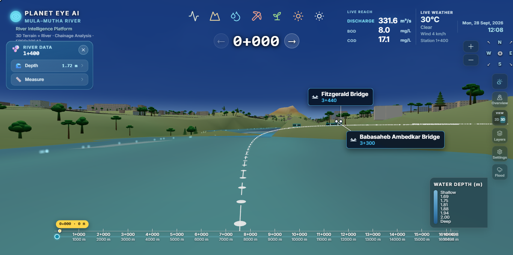
Chainage is written as K+MMM. For example 3+452 means 3 km and 452 m from the start of the river reach. A ruler along the bottom of the screen shows the full river from 0+000 to 16+961, and a navigator at the top (← 10+488 →) moves the selection along the river.
When the chainage changes, the camera flies to that spot and every panel — hydrology, water quality, BOD–COD, air quality and weather — updates to show that location.
| Element | What it does |
|---|---|
| Top toolbar | Opens the modules: 3D Digital Twin, Geology, Water Quality, Pollution, Land Use, Climate Impact and AQI. |
| River Data panel | Shows the current chainage, the water depth at that point, and a Measure tool. |
| Chainage navigator | ← / → buttons to step along the river; the selected point is highlighted on the river. |
| Chainage ruler | Full-length ruler at the bottom; click or drag to jump anywhere. |
| Water Depth legend | Colour scale from shallow to deep (1.69 m to 2.00 m) for the river surface. |
| Live Reach & Live Weather | Top-right strip with discharge, BOD, COD, temperature, sky condition and wind. |
| Right-side tools | Overview camera, 2D / 3D view, Layers, Settings and Flood controls. |
Sky presets (Calm Realistic, Clear Blue Day, Cinematic Clouds, Flood Weather, Golden Hour), glassy animated water with flow direction, and live-weather effects such as matching cloud cover and short rain bursts over the river.
The Digital Twin mode opens the Current Hydrology dashboard. It answers three questions for the selected chainage: What is the value? What is the current condition? Where on the river am I?
| Card | Unit |
|---|---|
| Discharge (Q) | m³/s |
| Water Level (WSE) | m MSL |
| River Depth | m |
| Flow Velocity | m/s |
| Wetted Area | m² |
| Manning n (roughness) | — |
Each card has a small trend line showing how the value changes along the river.
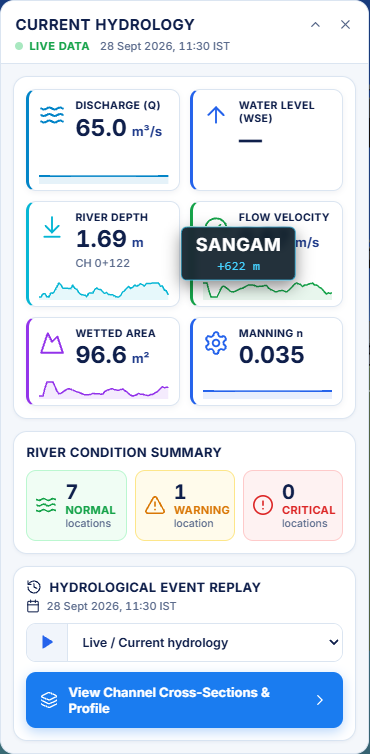
| Asset type | Safe water depth | Asset type | Safe water depth |
|---|---|---|---|
| Bridge | 2.5 m | Intake | 1.2 m |
| Landmark | 1.8 m | Outfall | 1.0 m |
A location turns Warning when the water is within 0.5 m of its safe level and Critical when it crosses it. The risk score (0–100) combines today's condition (60%) with the 72-hour outlook (40%) and refreshes every 30 seconds.
On 28 September 2026 the dashboard showed: discharge 65.0 m³/s, water level 535.43 m MSL, river depth 1.69 m, flow velocity 0.67 m/s, wetted area 96.6 m² and Manning n 0.035. The River Condition Summary reported 7 Normal, 1 Warning and 0 Critical locations. Moving downstream, the water level falls steadily — 533.87 m at Sangam (0+622), 532.84 m at Bund Garden (3+452) and 528.41 m at CH 16+000 — showing the gentle slope of the river through the city.
| Event | Date | Peak flow | Water level |
|---|---|---|---|
| July 2023 Monsoon Reservoir Release | 26 Jul 2023 | 585 m³/s | 546.2 m |
| August 2024 Monsoon High Discharge | 4 Aug 2024 | 980 m³/s | 547.4 m |
| March 2024 Pre-Monsoon Baseflow | 15 Mar 2024 | 35 m³/s | 541.2 m |
The August 2024 event carried about 28 times the dry-season flow of March 2024 and brought the river close to bank-full at Sangam and Bund Garden. Selecting it in Event Replay instantly re-draws depth, velocity and risk along the whole river.
A detailed panel for the river with Live and Historic modes and a station selector. Its tabs are:
| Tab | What it shows |
|---|---|
| Overview | Upstream discharge, reach length (16.962 km), 1,698 stations, 50-member 72-hour forecast, water level, threshold, margin and risk. |
| Discharge | Today's hourly flow with forecast and uncertainty band. |
| River Stage | Water level along the full river with the riverbed and threshold line. |
| Hydrograph | Flow from 72 hours ago to 72 hours ahead. |
| Threshold | Current margin and +72 h margin to the danger level. |
| Forecast | The full 50-member forecast envelope. |
| Alerts | Danger and warning cards, or "No active threshold exceedances". |
| Margin Board | Every asset with chainage, risk bar, margin and chance of exceeding the limit. |
Shows the water surface along the river for the next 6, 12, 24, 48 or 72 hours with a median line and a P10–P90 range, so the user can see both the most likely level and the possible extremes.
A cross-section of the channel at the selected chainage showing left bank, right bank, riverbed and deepest point, plus a longitudinal profile. It lists channel top width, water depth, water level, bed level, wetted area, hydraulic radius, discharge, velocity and Froude number. ‹ › buttons step to the next station.
For each station: water level now, threshold, margin, +72 h forecast level and margin, and a risk score out of 100.
| Gauge | Chainage | Warning level | Danger level |
|---|---|---|---|
| Sangam Bridge | 0+622 | 550.0 m | 551.5 m |
| Bund Garden | 3+452 | 546.5 m | 548.0 m |
The Geology module shows what lies under and around the river. Each layer is draped on the 3D terrain so bridges, buildings, trees and roads stay visible on top.
| Layer | What it shows |
|---|---|
| Spectral Lithology | Rock and soil types along the corridor. |
| Erosion | Bank erosion hotspots over 2016–2026. |
| Joining Streams | Drains, streams, nallahs and canals that flow into the river. |
| Main Stem | The main river centreline drawn in gold. |
| Bathymetry | Water depth of the riverbed in five classes. |
| Class | Area |
|---|---|
| Silica-rich | 34.1% |
| Basaltic / Mafic | 16.4% |
| Clay-rich | 14.3% |
| Weathered Rock | 11.7% |
| Ferruginous / Iron-rich | 10.3% |
| Alluvial / Sedimentary | 8.2% |
| Mixed Rock-soil | 3.0% |
| Water | 1.9% |
| Class | Area |
|---|---|
| No erosion | 83.1% |
| Low | 15.5% |
| Moderate | 1.4% |
| High / Very high | 0% |
1.53–1.62 · 1.62–1.72 · 1.72–1.81 · 1.81–1.91 · 1.91–2.00 m (shallow → deep). Clicking the river shows water depth, depth class and elevation.
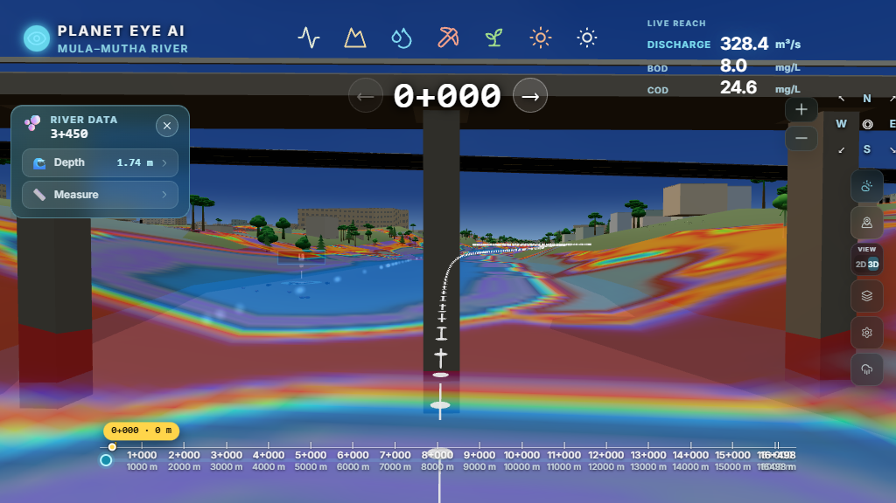
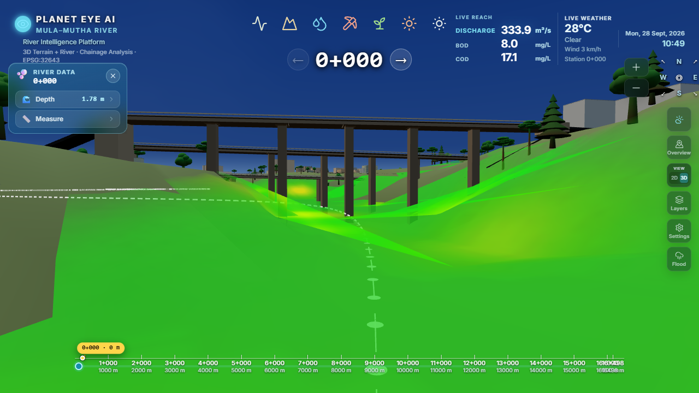
About one third of the corridor (34.1%) is silica-rich ground and another 16.4% is basaltic rock — typical of the Deccan plateau. The banks are largely stable: 83.1% of the corridor shows no erosion, 15.5% low erosion and only 1.4% moderate erosion, with no high-erosion zones. The Joining Streams layer maps 60 drainage channels; for each one the card shows its type, nearest chainage, distance to the river, flow direction and whether it is connected to the river.
The Water Quality module colours the river surface by a chosen water-quality measure. Hovering over the river shows the class, value, unit and location.
| Sub-component | Unit | Classes |
|---|---|---|
| Salinity | ppt | Very Low 0–0.5 · Low 0.5–5 · Moderate 5–18 · High 18–30 · Very High >30 |
| TSS (Total Suspended Solids) | mg/L | Low 0–10 · Moderate 10–50 · High >50 |
| Chlorophyll-a | µg/L | Low 0–2 · High >2 |
| BOD–COD / Organic Pollution | mg/L | Classes A–E (see next section) |
Two further water layers support the analysis: a water index (water / non-water) and water surface temperature in five classes: <27, 27–30, 30–33, 33–36 and ≥36 °C.
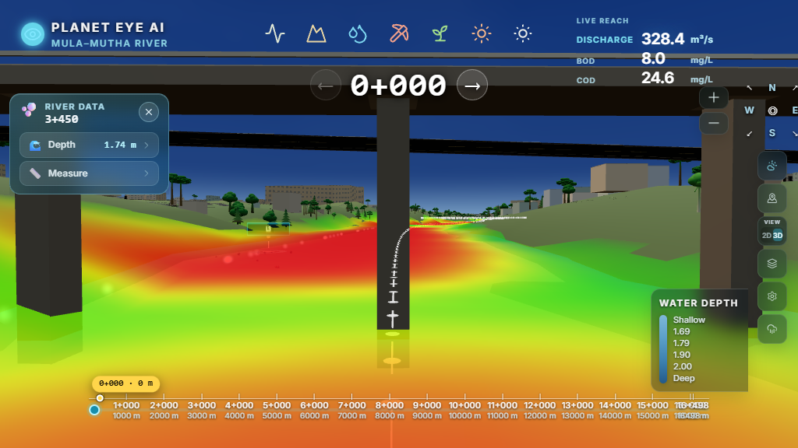
At Bund Garden (CH 3+450), the salinity layer shows the banks and shallow edges in the green–yellow (very low to low) range, with a red band of higher values running down the central channel. In the same way, the TSS layer picks out reaches where suspended sediment is above 50 mg/L, and the Chlorophyll-a layer flags reaches above 2 µg/L, where algae growth is more likely. Hovering anywhere on the river gives the exact value and class for that point.
BOD (Biochemical Oxygen Demand) and COD (Chemical Oxygen Demand) measure how much organic pollution is in the water. Higher values mean dirtier water with less oxygen for fish.
| Class | BOD | Suitable use |
|---|---|---|
| A | ≤ 2 mg/L | Drinking (after treatment) |
| B | ≤ 3 mg/L | Outdoor bathing |
| C | ≤ 6 mg/L | Drinking after conventional treatment |
| D | ≤ 10 mg/L | Fisheries and wildlife |
| E | > 10 mg/L | Irrigation and industrial cooling only |
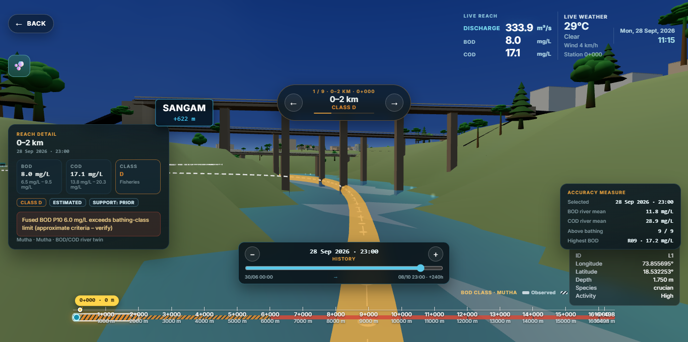
The first reach (0–2 km, near the Sangam) was Class D with BOD 8.0 mg/L (likely range 6.5–9.5) and COD 17.1 mg/L (13.8–20.3) — suitable for fisheries but not for bathing. Across the whole river, the average BOD was 11.8 mg/L and average COD 28.9 mg/L. All 9 of 9 reaches were above the bathing limit of 3 mg/L, and the worst reach (R09) reached 17.2 mg/L BOD (Class E). The reach tour and class ruler make it easy to see which stretches need the most attention.
The Pollution module maps garbage dumping points along the river and shows how dense the waste is on the ground, drawn as small debris objects in the 3D scene.
| Density | Debris objects per patch | Patch size |
|---|---|---|
| Low | 4–7 | 2–4 m radius |
| Medium | 8–14 | 4–7 m radius |
| High | 15–24 | 6–10 m radius |
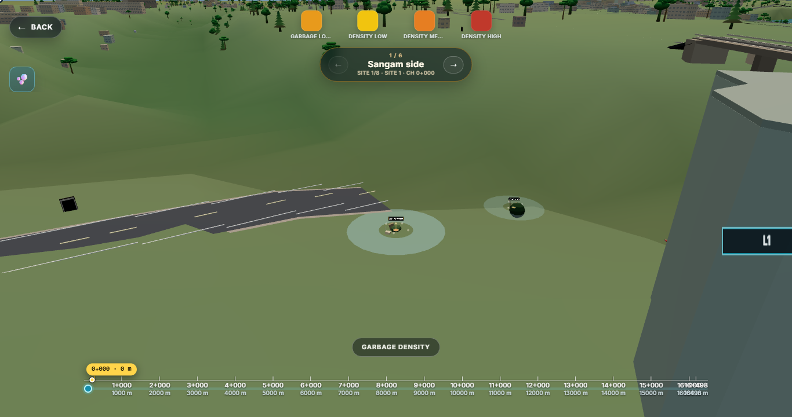
The tour opens on the Sangam side (1/6) with 8 garbage sites. Each site shows its distance to the water and density ring, so a clean-up team can list which sites are inside the river channel (highest priority), which are on the bank, and which are further away. Stepping to the next side moves the camera along the corridor to Sangamwadi, Bund Garden, Mundhwa, Kharadi and Manjari in turn.
The Land Use module shows how the land around the river is used and how it changes over time.
| Sub-component | Classes | Time steps |
|---|---|---|
| LULC (Land Use / Land Cover) | Forest · Crop Land · Barren Land · Settlements · Water Bodies | Years 2021–2026 |
| Silt Classification | Low · Moderate · High · Very High | Monthly, Jan–Jul 2026 |
| Silt Volume Surface | Continuous scale 0–94.3 | Monthly, Jan–Jul 2026 |
| Vegetation Health | Stressed / Poor · Moderate · Healthy · Dense canopy | — |
| Vegetation Type | Non-Vegetation · Trees · Shrub / Scrub · Grass · Mixed | — |
Each class appears as a chip at the top of the screen with its share of the area. A Year or Period stepper at the bottom moves through time, and a Clear Layer button removes the overlay.
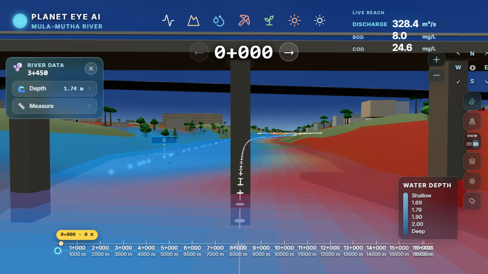
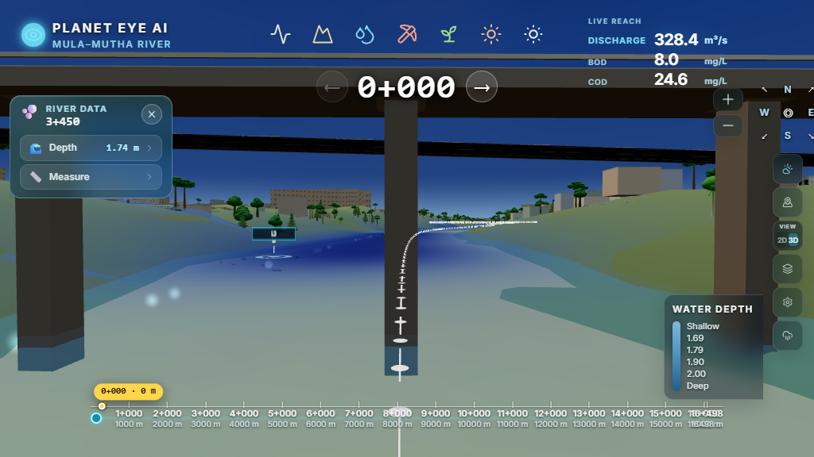
The LULC layer shows the river channel as water bodies surrounded almost entirely by settlements on both banks, with forest and crop land only in small patches. The Year stepper lets you compare every year from 2021 to 2026 to see how the land around the river has changed. The Silt Classification layer can be stepped month by month from January to July 2026 to follow where silt builds up from Low to Very High through the dry season and into the monsoon.
The Climate Impact module shows how the 2026 monsoon flooded the river corridor, period by period.
| Period | Dates (2026) | Surface water (ha) | Flood water (ha) |
|---|---|---|---|
| 1 | 21 May – 2 Jun | 106.42 | 18.23 |
| 2 | 2 – 14 Jun | 105.81 | 17.76 |
| 3 | 14 – 26 Jun | 104.18 | 18.09 |
| 4 | 26 Jun – 3 Jul | 87.26 | 7.16 |
| 5 | 3 – 15 Jul | 92.02 | 69.67 (peak flood) |
| 6 | 15 – 27 Jul | 156.07 | 30.36 |
| 7 | 27 Jul – 8 Aug | 169.93 (peak water) | 6.27 |
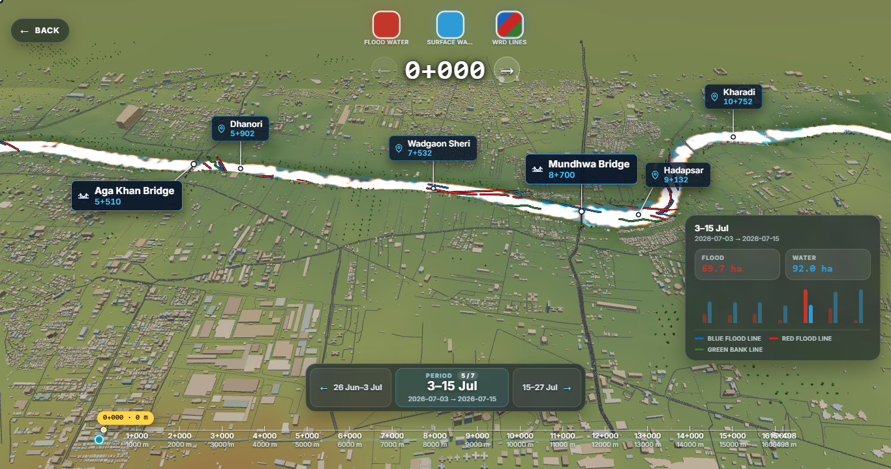
Flooding stayed near 18 ha through June, then jumped almost four times to 69.67 ha in the 3–15 July period — the flood peak. After the peak, flood land fell but open water kept rising, reaching 169.93 ha by early August as the river stayed full. The map shows where the flooded land sits along the corridor, helping planners see which banks and neighbourhoods are most exposed.
The AQI module shows live air quality along the river. The river ribbon itself is coloured by AQI category, and a panel shows the readings for the selected chainage. The data refreshes every minute and whenever the chainage changes.
| Measure | Unit | Measure | Unit |
|---|---|---|---|
| AQI | index | NO₂ | µg/m³ |
| PM2.5 | µg/m³ | SO₂ | µg/m³ |
| PM10 | µg/m³ | O₃ | µg/m³ |
| CO | ppm | ||
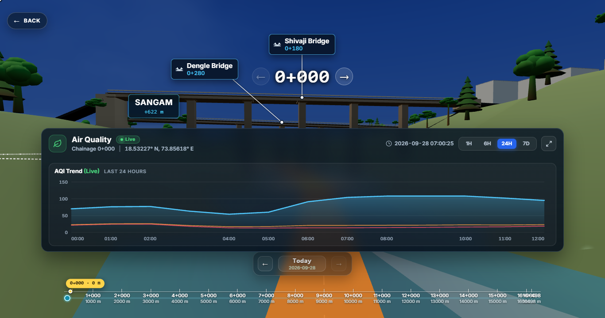
On 28 September 2026 at CH 0+000, the AQI was about 70 (Moderate) at midnight and dropped to about 55 in the early morning (04:00). As morning traffic built up it rose past 100 at 07:00 and stayed around 105–110 (Poor) until 10:00, easing to about 95 by noon. The PM2.5 and PM10 lines stayed low and steady through the day, while the overall AQI line carried the morning rise.
A compact strip at the top-right of the screen shows live conditions for the selected chainage.
Opening the weather strip shows Past 7 Days and Next 7 Days charts for temperature, precipitation, rainfall, wind speed, PM2.5 and PM10.
The live weather also drives the 3D scene: cloud cover in the sky matches the real sky, and when it rains, short rain bursts appear over the river.
Around midday the strip showed 29–31 °C with clear to partly cloudy skies and a light wind of 4 km/h. The Live Reach showed a discharge of about 333.9 m³/s, BOD 8.0 mg/L and COD 17.1 mg/L at the Sangam station — matching the BOD–COD Class D reading for that reach.
The Flood Simulation tool finds flooding for any chosen date range (by default the last 45 days) and plays it back on the 3D river.
The model places 9 fishing locations (L1–L9) along the river, from near the Sangam (L1) to near Manjari (L9), with animated fish swimming at surface, mid-water and bottom levels.
| Group | Species |
|---|---|
| Large fish | Rohu, Catla, Mrigal, Common carp |
| Medium fish | Tilapia, Mahseer |
| Schooling fish | Barb, Danio |
| Bottom fish | Catfish, Loach, Eel (only in deep zones above 1.85 m) |
Location L1 near the Sangam (73.8557° E, 18.5323° N) has a water depth of 1.750 m and High fishing activity, helped by the deep water and the nearby bridges.
| Live feature | What updates | How often |
|---|---|---|
| Current Hydrology dashboard | Discharge, water level, depth, velocity, wetted area, condition summary | With every chainage change and profile update |
| Asset risk | Normal / Warning / Critical status and risk score for bridges, landmarks and outfalls | Every 30 seconds |
| Water level forecast | Next 6–72 hours with P10–P90 range | Continuously |
| BOD–COD | BOD, COD and water class for each reach, hour by hour, with forecast hours | Hourly |
| Air Quality | AQI, PM2.5, PM10, NO₂, SO₂, O₃, CO | Every 60 seconds and on chainage change |
| Live Weather | Temperature, sky, wind, 7-day past and forecast | On load and on chainage change |
| Live Reach | Discharge, BOD and COD at the selected chainage | On chainage change |
| 3D sky and rain | Cloud cover and rain bursts matched to live weather | Continuously |
| Layer | Time range |
|---|---|
| Land Use (LULC) | 2021 – 2026, yearly |
| Silt Classification & Silt Volume | January – July 2026, monthly |
| Climate Impact | 7 periods, May – August 2026 |
| Erosion | 2016 – 2026 |
| Event Replay | July 2023, March 2024, August 2024 |
| Flood Simulation | Any chosen date range |
| Module | Key finding |
|---|---|
| Hydrology | 65 m³/s at Sangam with 1.69 m depth; water level falls from 535.4 m to 528.4 m over 16 km; 7 Normal, 1 Warning, 0 Critical locations. |
| Event Replay | August 2024 peak of 980 m³/s — about 28 times the March 2024 dry-season flow — brought the river near bank-full. |
| Geology | Silica-rich (34.1%) and basaltic (16.4%) ground; 83.1% of banks show no erosion; 60 drains join the river. |
| Water Quality | Salinity very low to low on the banks at Bund Garden, with higher values in the central channel. |
| BOD–COD | All 9 reaches above the bathing limit; river average BOD 11.8 mg/L; worst reach 17.2 mg/L (Class E). |
| Pollution | About 65 garbage sites across six river sides, 8 on the Sangam side alone. |
| Land Use | Settlements dominate both banks; land use comparable year by year from 2021 to 2026, silt month by month in 2026. |
| Climate Impact | Flood peak of 69.67 ha on 3–15 July 2026; open water peaked at 169.93 ha in early August. |
| Air Quality | AQI rose from about 55 (early morning) to 105–110 (Poor) during the morning at the Sangam. |
| Fishing | 9 fishing zones; L1 near the Sangam at 1.75 m depth with High activity. |
RiverEye 3D turns the Mula–Mutha river into a single, living picture. Flow, depth and flood risk; rock, soil and erosion; water quality and organic pollution; garbage hotspots; land use and vegetation; monsoon flooding; and live air quality and weather — all sit on the same 3D river and all follow the same chainage.
The case studies show how this helps in practice: spotting the Class D–E pollution reaches, seeing the July 2026 flood peak, following the morning AQI rise, planning garbage clean-up side by side, and checking live water levels against bridge safety limits. RiverEye 3D gives planners, scientists and citizens a clear, shared view of the river's health — today, in the past and in the hours ahead.